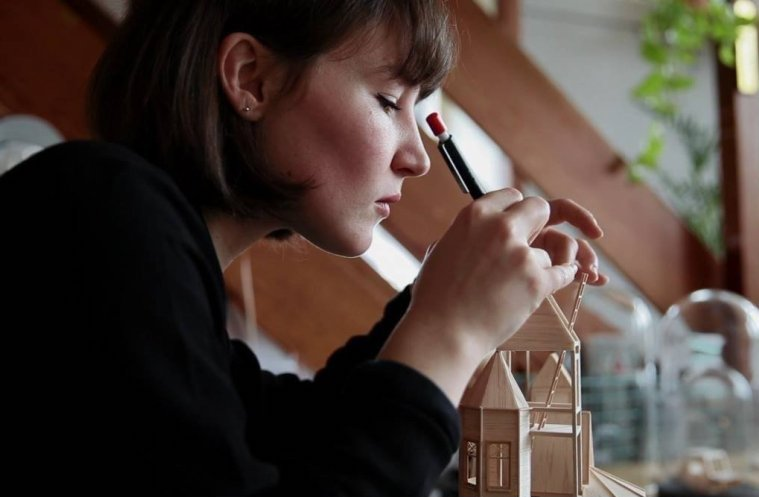

Vera van Wolferen
Dutch artist Vera van Wolferen creates intricate and meticulously-constructed scenes out of paper, cardboard and wood. She is inspired by her everyday surroundings. Seemingly common household objects, architectural elements and automobiles are fused into magical landscapes. The hand crafted scenes she creates are vehicles for the imagination. She graduated in 2013 with the stop motion animation How to Catch a Bird. Since then she has been working as an independent artist, set designer and animator. In 2015 she was named one of the new-generation animators by Monocle. You can find some publications of my work on Creative Boom, Fubiz, This is Colossal, Ignant, Brown Paper Bag, All About Papercutting, Designwrld, Juxtapoz and Mr. Wolf Magazine. See more of here work here: veravanwolferen.nl